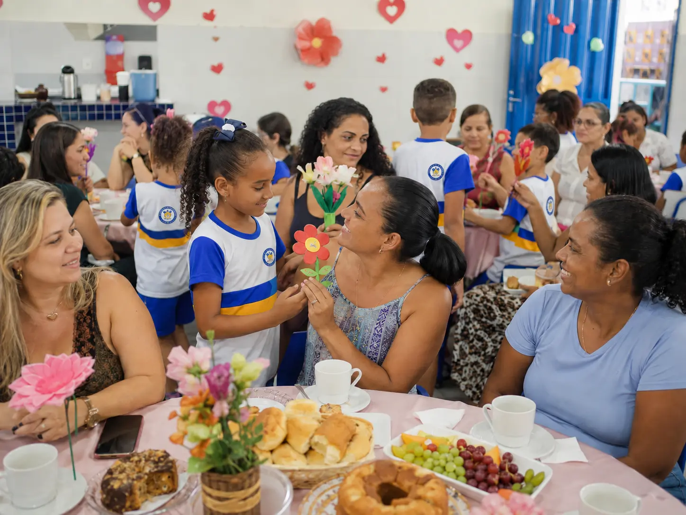

10 de maio de 2026
Chá da tarde celebra o Dia das Mães
A escola realizou um chá da tarde em homenagem ao Dia das Mães, reunindo famílias, estudantes e equipe escolar em um momento de acolhimento, afeto e valorização da comunidade.